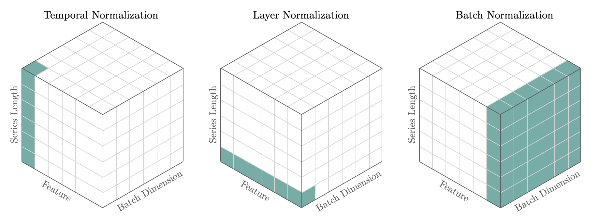

import numpy as npTemporalNorm
Temporal normalization has proven to be essential in neural forecasting tasks, as it enables network’s non-linearities to express themselves. Forecasting scaling methods take particular interest in the temporal dimension where most of the variance dwells, contrary to other deep learning techniques like
BatchNorm that normalizes across batch and temporal dimensions, and LayerNorm that normalizes across the feature dimension. Currently we support the following techniques: std, median, norm, norm1, invariant. 
1. Auxiliary Functions
masked_median
masked_median (x, mask, dim=-1, keepdim=True)
Masked Median
Compute the median of tensor x along dim, ignoring values where mask is False. x and mask need to be broadcastable.
Parameters:
x: torch.Tensor to compute median of along dim dimension.
mask: torch Tensor bool with same shape as x, where x is valid and False where x should be masked. Mask should not be all False in any column of dimension dim to avoid NaNs from zero division.
dim (int, optional): Dimension to take median of. Defaults to -1.
keepdim (bool, optional): Keep dimension of x or not. Defaults to True.
Returns:
x_median: torch.Tensor with normalized values.
masked_mean
masked_mean (x, mask, dim=-1, keepdim=True)
Masked Mean
Compute the mean of tensor x along dimension, ignoring values where mask is False. x and mask need to be broadcastable.
Parameters:
x: torch.Tensor to compute mean of along dim dimension.
mask: torch Tensor bool with same shape as x, where x is valid and False where x should be masked. Mask should not be all False in any column of dimension dim to avoid NaNs from zero division.
dim (int, optional): Dimension to take mean of. Defaults to -1.
keepdim (bool, optional): Keep dimension of x or not. Defaults to True.
Returns:
x_mean: torch.Tensor with normalized values.
2. Scalers
minmax_scaler
minmax_scaler (x, mask, eps=1e-06, dim=-1)
MinMax Scaler
Standardizes temporal features by ensuring its range dweels between [0,1] range. This transformation is often used as an alternative to the standard scaler. The scaled features are obtained as:
\[\mathbf{z} = (\mathbf{x}_{[B,T,C]}-\mathrm{min}({\mathbf{x}})_{[B,1,C]})/ (\mathrm{max}({\mathbf{x}})_{[B,1,C]}- \mathrm{min}({\mathbf{x}})_{[B,1,C]})\]
Parameters:
x: torch.Tensor input tensor.
mask: torch Tensor bool, same dimension as x, indicates where x is valid and False where x should be masked. Mask should not be all False in any column of dimension dim to avoid NaNs from zero division.
eps (float, optional): Small value to avoid division by zero. Defaults to 1e-6.
dim (int, optional): Dimension over to compute min and max. Defaults to -1.
Returns:
z: torch.Tensor same shape as x, except scaled.
minmax1_scaler
minmax1_scaler (x, mask, eps=1e-06, dim=-1)
MinMax1 Scaler
Standardizes temporal features by ensuring its range dweels between [-1,1] range. This transformation is often used as an alternative to the standard scaler or classic Min Max Scaler. The scaled features are obtained as:
\[\mathbf{z} = 2 (\mathbf{x}_{[B,T,C]}-\mathrm{min}({\mathbf{x}})_{[B,1,C]})/ (\mathrm{max}({\mathbf{x}})_{[B,1,C]}- \mathrm{min}({\mathbf{x}})_{[B,1,C]})-1\]
Parameters:
x: torch.Tensor input tensor.
mask: torch Tensor bool, same dimension as x, indicates where x is valid and False where x should be masked. Mask should not be all False in any column of dimension dim to avoid NaNs from zero division.
eps (float, optional): Small value to avoid division by zero. Defaults to 1e-6.
dim (int, optional): Dimension over to compute min and max. Defaults to -1.
Returns:
z: torch.Tensor same shape as x, except scaled.
std_scaler
std_scaler (x, mask, dim=-1, eps=1e-06)
Standard Scaler
Standardizes features by removing the mean and scaling to unit variance along the dim dimension.
For example, for base_windows models, the scaled features are obtained as (with dim=1):
\[\mathbf{z} = (\mathbf{x}_{[B,T,C]}-\bar{\mathbf{x}}_{[B,1,C]})/\hat{\sigma}_{[B,1,C]}\]
Parameters:
x: torch.Tensor.
mask: torch Tensor bool, same dimension as x, indicates where x is valid and False where x should be masked. Mask should not be all False in any column of dimension dim to avoid NaNs from zero division.
eps (float, optional): Small value to avoid division by zero. Defaults to 1e-6.
dim (int, optional): Dimension over to compute mean and std. Defaults to -1.
Returns:
z: torch.Tensor same shape as x, except scaled.
robust_scaler
robust_scaler (x, mask, dim=-1, eps=1e-06)
Robust Median Scaler
Standardizes features by removing the median and scaling with the mean absolute deviation (mad) a robust estimator of variance. This scaler is particularly useful with noisy data where outliers can heavily influence the sample mean / variance in a negative way. In these scenarios the median and amd give better results.
For example, for base_windows models, the scaled features are obtained as (with dim=1):
\[\mathbf{z} = (\mathbf{x}_{[B,T,C]}-\textrm{median}(\mathbf{x})_{[B,1,C]})/\textrm{mad}(\mathbf{x})_{[B,1,C]}\]
\[\textrm{mad}(\mathbf{x}) = \frac{1}{N} \sum_{}|\mathbf{x} - \mathrm{median}(x)|\]
Parameters:
x: torch.Tensor input tensor.
mask: torch Tensor bool, same dimension as x, indicates where x is valid and False where x should be masked. Mask should not be all False in any column of dimension dim to avoid NaNs from zero division.
eps (float, optional): Small value to avoid division by zero. Defaults to 1e-6.
dim (int, optional): Dimension over to compute median and mad. Defaults to -1.
Returns:
z: torch.Tensor same shape as x, except scaled.
invariant_scaler
invariant_scaler (x, mask, dim=-1, eps=1e-06)
Invariant Median Scaler
Standardizes features by removing the median and scaling with the mean absolute deviation (mad) a robust estimator of variance. Aditionally it complements the transformation with the arcsinh transformation.
For example, for base_windows models, the scaled features are obtained as (with dim=1):
\[\mathbf{z} = (\mathbf{x}_{[B,T,C]}-\textrm{median}(\mathbf{x})_{[B,1,C]})/\textrm{mad}(\mathbf{x})_{[B,1,C]}\]
\[\mathbf{z} = \textrm{arcsinh}(\mathbf{z})\]
Parameters:
x: torch.Tensor input tensor.
mask: torch Tensor bool, same dimension as x, indicates where x is valid and False where x should be masked. Mask should not be all False in any column of dimension dim to avoid NaNs from zero division.
eps (float, optional): Small value to avoid division by zero. Defaults to 1e-6.
dim (int, optional): Dimension over to compute median and mad. Defaults to -1.
Returns:
z: torch.Tensor same shape as x, except scaled.
identity_scaler
identity_scaler (x, mask, dim=-1, eps=1e-06)
Identity Scaler
A placeholder identity scaler, that is argument insensitive.
Parameters:
x: torch.Tensor input tensor.
mask: torch Tensor bool, same dimension as x, indicates where x is valid and False where x should be masked. Mask should not be all False in any column of dimension dim to avoid NaNs from zero division.
eps (float, optional): Small value to avoid division by zero. Defaults to 1e-6.
dim (int, optional): Dimension over to compute median and mad. Defaults to -1.
Returns:
x: original torch.Tensor x.
3. TemporalNorm Module
TemporalNorm
TemporalNorm (scaler_type='robust', dim=-1, eps=1e-06)
Temporal Normalization
Standardization of the features is a common requirement for many machine learning estimators, and it is commonly achieved by removing the level and scaling its variance. The TemporalNorm module applies temporal normalization over the batch of inputs as defined by the type of scaler.
\[\mathbf{z}_{[B,T,C]} = \textrm{Scaler}(\mathbf{x}_{[B,T,C]})\]
Parameters:
scaler_type: str, defines the type of scaler used by TemporalNorm. available [identity, standard, robust, minmax, minmax1, invariant].
dim (int, optional): Dimension over to compute scale and shift. Defaults to -1.
eps (float, optional): Small value to avoid division by zero. Defaults to 1e-6.
TemporalNorm.transform
TemporalNorm.transform (x, mask)
Center and scale the data.
Parameters:
x: torch.Tensor shape [batch, time, channels].
mask: torch Tensor bool, shape [batch, time] where x is valid and False where x should be masked. Mask should not be all False in any column of dimension dim to avoid NaNs from zero division.
Returns:
z: torch.Tensor same shape as x, except scaled.
TemporalNorm.inverse_transform
TemporalNorm.inverse_transform (z, x_shift=None, x_scale=None)
Scale back the data to the original representation.
Parameters:
z: torch.Tensor shape [batch, time, channels], scaled.
Returns:
x: torch.Tensor original data.
Example
# Declare synthetic batch to normalize
x1 = 10**0 * np.arange(36)[:, None]
x2 = 10**1 * np.arange(36)[:, None]
np_x = np.concatenate([x1, x2], axis=1)
np_x = np.repeat(np_x[None, :,:], repeats=2, axis=0)
np_x[0,:,:] = np_x[0,:,:] + 100
np_mask = np.ones(np_x.shape)
np_mask[:, -12:, :] = 0
print(f'x.shape [batch, time, features]={np_x.shape}')
print(f'mask.shape [batch, time, features]={np_mask.shape}')# Validate scalers
x = 1.0*torch.tensor(np_x)
mask = torch.tensor(np_mask)
scaler = TemporalNorm(scaler_type='standard', dim=1)
x_scaled = scaler.transform(x=x, mask=mask)
x_recovered = scaler.inverse_transform(x_scaled)
plt.plot(x[0,:,0], label='x1', color='#78ACA8')
plt.plot(x[0,:,1], label='x2', color='#E3A39A')
plt.title('Before TemporalNorm')
plt.xlabel('Time')
plt.legend()
plt.show()
plt.plot(x_scaled[0,:,0], label='x1', color='#78ACA8')
plt.plot(x_scaled[0,:,1]+0.1, label='x2+0.1', color='#E3A39A')
plt.title(f'TemporalNorm \'{scaler.scaler_type}\' ')
plt.xlabel('Time')
plt.legend()
plt.show()
plt.plot(x_recovered[0,:,0], label='x1', color='#78ACA8')
plt.plot(x_recovered[0,:,1], label='x2', color='#E3A39A')
plt.title('Recovered')
plt.xlabel('Time')
plt.legend()
plt.show()